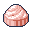
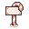
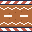
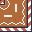
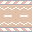

Luz pixel kit preview
Everything here is read from public/sprites/. Sprites are shown at whole-number scales only.
Hero (background 4x, character and props 3x). Clouds drift, the flag waves; hover the scene and she waves.
Animations (4x)
luz-idle.png, 4 frames, loops
luz-walk.png, 8 frames, loops
luz-walk-down.png, 8 frames, loops
luz-walk-up.png, 8 frames, loops
luz-celebrate.png, 6 frames
Emotions for the journey stops (4x, with the speech bubble that pops in on arrival)
Apprentice, student look: luz-emote-student.png
Apprentice, alternate: luz-emote-wow.png + emote-wow.png
Software Engineer: luz-emote-grin.png + emote-grin.png
Junior Frontend Dev: luz-emote-cheer.png + emote-cheer.png
Frontend Team Lead: luz-emote-happy.png + emote-happy.png
Where I'm headed: luz-emote-starry.png + emote-starry.png
Road (tiles and character at the same pixel size, 2x)
Props and tiles




